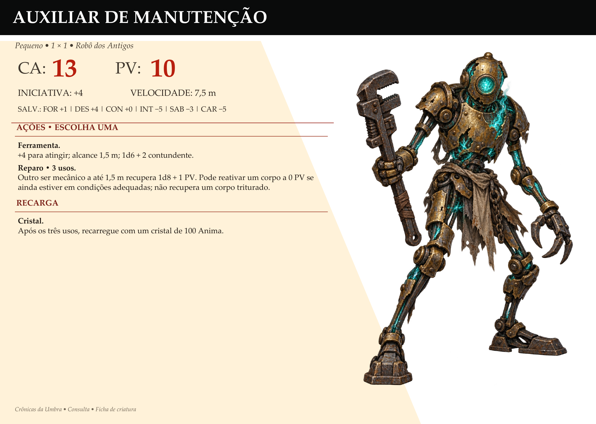

Recuperação
Três auxiliares foram recolhidos primeiro, mas um caiu durante o carregamento e ficou inutilizado. Mais três vieram ao fim da expedição, completando cinco que chegaram ao templo.
Função
São robôs de apoio, destinados às tarefas do local. Não foram adquiridos como uma tropa de combate, e não há bônus automáticos de produção ou renda definidos para eles.
Reparo
O modelo de Auxiliar demonstrou que pode reparar outros seres mecânicos. Reparo é uma ação em um alvo mecânico adjacente, a 1,5 m, que recupera 1d8+1 PV. São três usos antes de recarregar com um cristal de 100 ânima; um corpo a 0 PV pode ser reativado se ainda estiver em condições, mas não se tiver sido destruído, como por trituração.
Ficha de consulta
| CA | PV por auxiliar | Iniciativa | Deslocamento |
|---|---|---|---|
| 13 | 10 | +4 | 7,5 m; sem voo |
Pequeno. Salvaguardas: FOR +1; DES +4; CON +0; INT −5; SAB −3; CAR −5. Nenhuma resistência ou imunidade adicional definida para este bloco.
Ações · escolher uma
Ferramenta: +4 para atingir; alcance 1,5 m; 1d6+2 contundente. Um ataque por turno.
Reparo: ação em outro ser mecânico adjacente, a 1,5 m; recupera 1d8+1 PV. Três usos por auxiliar; depois, recarregar com um cristal de 100 ânima. Pode reativar um corpo a 0 PV ainda em condições adequadas; não recupera um corpo triturado.
Creature card
